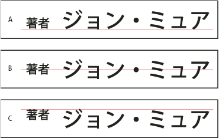

Use mojisoroe to align Asian characters
Mojisoroe is the alignment of characters in Asian type. When a line of text contains different sizes of characters, you can specify how to align text to the largest characters in the line: to the top, center, or bottom of the embox (right, center, and left for vertical frames), to the roman baseline, or to the top or bottom of the ICF box (right or left for vertical frames). The ICF is the space where characters can be placed.

Character alignment options
- A.
- Small characters aligned to the bottom
- B.
- Small characters aligned to the middle
- C.
- Small characters aligned to the top
 In
the Character panel menu, choose an option from the Character Alignment submenu:
In
the Character panel menu, choose an option from the Character Alignment submenu: - Roman Baseline
- Aligns the small characters in a line to the large character.
- Embox Top/Right, Embox Center, or Embox Bottom/Left
- Aligns the small characters in a line to the specified position of the large character’s embox. In vertical text frames, Embox Top/Right aligns the text to the right of the embox, and Embox Bottom/Left aligns the text to the left of the embox.
- ICF Top/Right and ICF Bottom/Left
- Aligns the small characters in a line to the ICF specified by the large characters. In vertical text frames, ICF Top/Right aligns the text to the right of the ICF, and ICF Bottom/Left aligns the text to the left of the ICF.